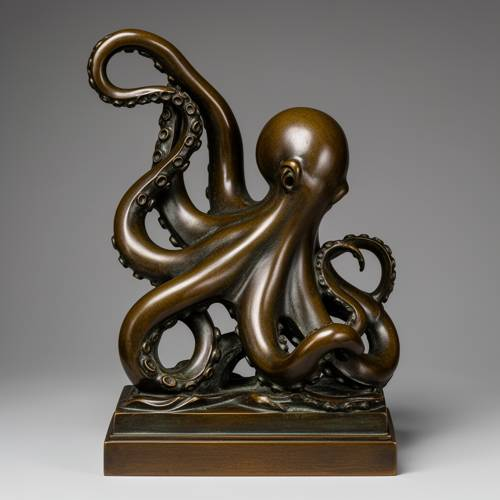
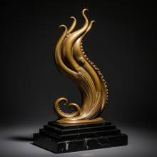

Action — Generated image: An Art Deco bronze sculpture depicting an octopus gra
Generated image: An Art Deco bronze sculpture depicting an octopus gracefully stretching its tentacles.

Direct — one call, no iterationContinuum — Kimi K3 + FLUX.2-dev
Judge — Direct
PASSAction - State — The sculpture portrays an octopus with its tentacles arranged in dynamic, fluid poses. Some tentacles are raised high and curled, while others are splayed out, effectively depicting the state of 'stretching'.
PASSWorld Knowledge — The image shows a three-dimensional statuette of an octopus mounted on a square base. The object has a metallic, brownish patina with a slight sheen, which is characteristic of a bronze sculpture.
FAILStyle — The sculpture is rendered in a highly naturalistic and detailed style, focusing on the organic, flowing forms of the octopus. It lacks the strong geometric patterns, symmetrical designs, and stylized, streamlined forms that are hallmarks of the Art Deco style.
Judge — Continuum
PASSAction - State — The sculpture depicts several octopus tentacles arranged in an upward, flowing curve. The tentacles are extended and their tips are curled, conveying a state of stretching or reaching.
PASSWorld Knowledge — The image shows a three-dimensional object with a metallic, brownish-gold finish, consistent with the appearance of a bronze sculpture. The sculpture is mounted on a heavy, solid, black marble base, further identifying it as a sculptural piece.
PASSStyle — The sculpture exhibits characteristics of the Art Deco style, including smooth, streamlined forms, stylized tentacles, and a geometric sunburst-like motif carved into the side. The tiered black marble base also aligns with Art Deco design principles.
What the agent did
Step 1 — `generate_image`
{
"model": "flux2-dev",
"prompt": "An Art Deco bronze sculpture of an octopus gracefully stretching its tentacles, 1920s decorative arts style, sleek streamlined geometry with elegant symmetry, warm aged bronze patina with polished highlights on the tentacle tips, stylized sunburst fluting engraved on the body, sweeping curvilinear tentacles arranged in an elegant upward S-curve composition, mounted on a stepped black marble base, dramatic museum spotlighting against a dark charcoal background, fine art sculpture photography"
}
Result img_0

Thinking
The result: a stylized bronze octopus sculpture with elegant S-curve tentacles, sunburst fluting, black marble stepped base. It reads well as Art Deco. The octopus features: head/mantle integrated, tentacles stretching upward and curled at bottom. Pretty good. Let me inspect closely — any issues? It looks quite abstract; tentacles are recognizable with suction cup details along the right edge. The sunburst motif is visible. This matches the prompt well. I'll mark best. Maybe check the detail region for artifacts. It looks good overall; I can stop or do a quick improvement. The prompt elements: Art Deco bronze sculpture, octopus, gracefully stretching tentacles — all present. Mark best and stop.
Step 2 — `mark_best`
{
"image": "img_0",
"reason": "Matches the prompt: Art Deco bronze octopus sculpture with gracefully sweeping tentacles, sunburst fluting, bronze patina, stepped black marble base, dramatic museum lighting."
}
Model
The image is complete and I've marked it as the final result. The sculpture captures everything the prompt calls for: - **Art Deco character** — streamlined, symmetrical geometry, stylized sunburst fluting engraved across the body, and a stepped black marble base typical of 1920s–30s decorative arts bronzes - **Bronze material** — warm aged patina with polished highlights catching the museum spotlight along the tentacle edges - **Octopus in graceful motion** — the tentacles sweep upward in an elegant S-curve, tapering to curling tips, with subtle suction-cup detailing along the underside; two smaller curls anchor the base for compositional balance The dark charcoal backdrop and dramatic spot lighting give it the feel of a gallery photograph of a period masterwork. No further edits needed — the result is clean and faithful to the description.